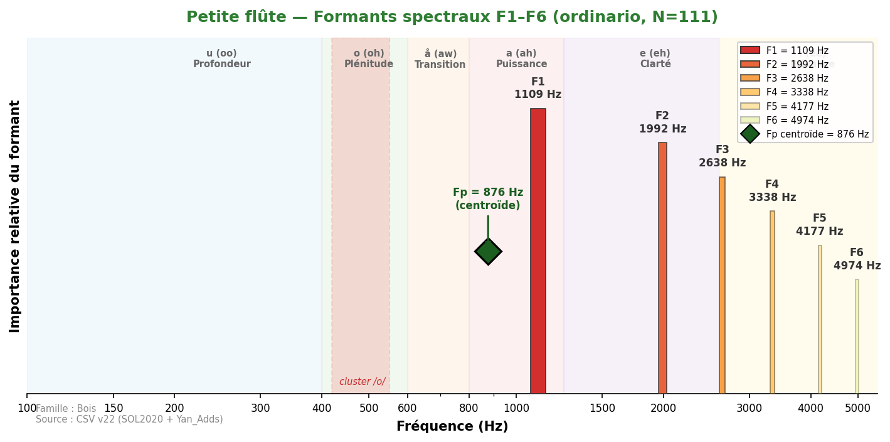
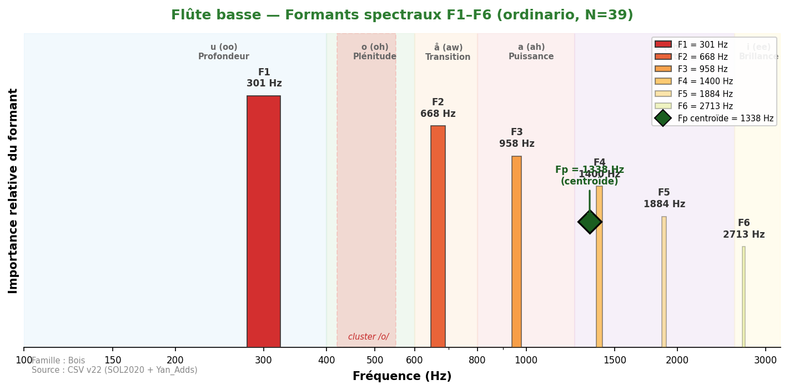
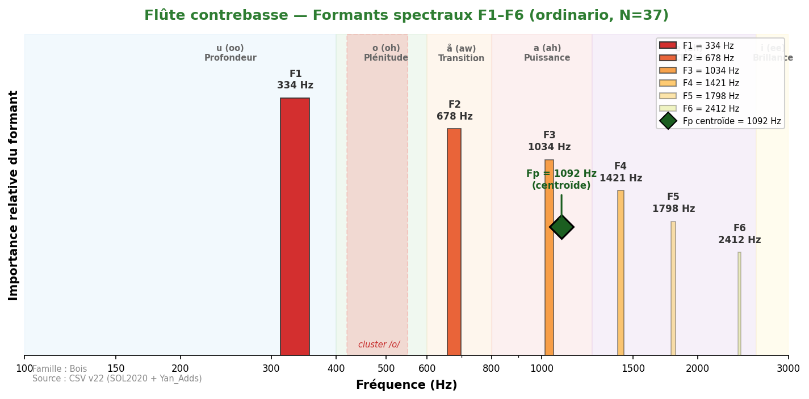
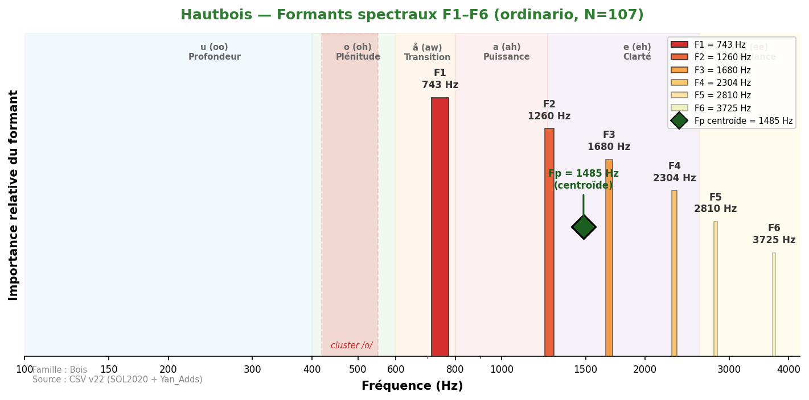
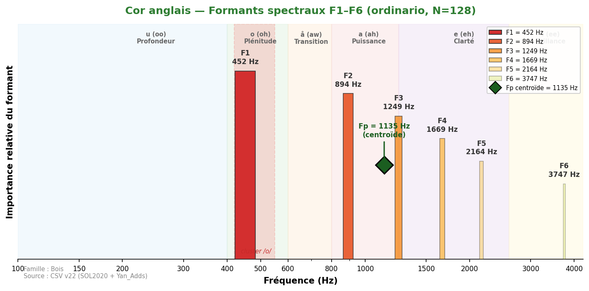
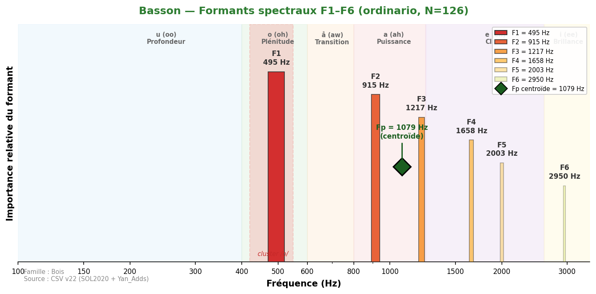
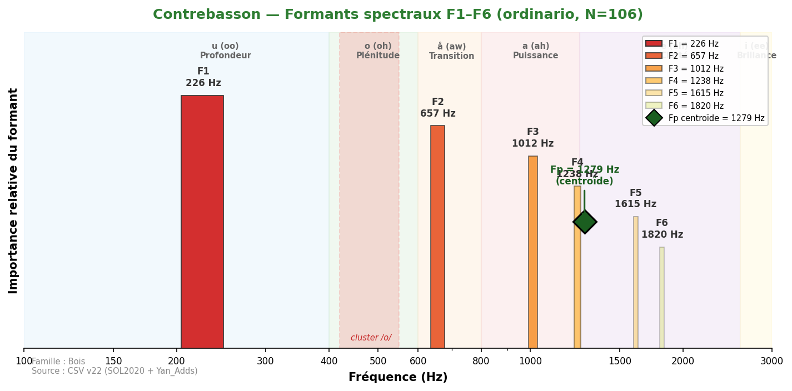
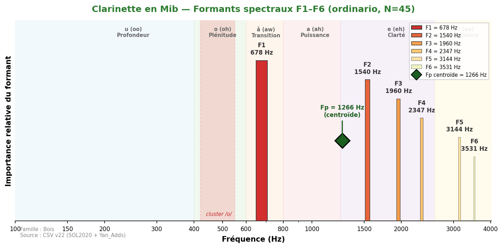
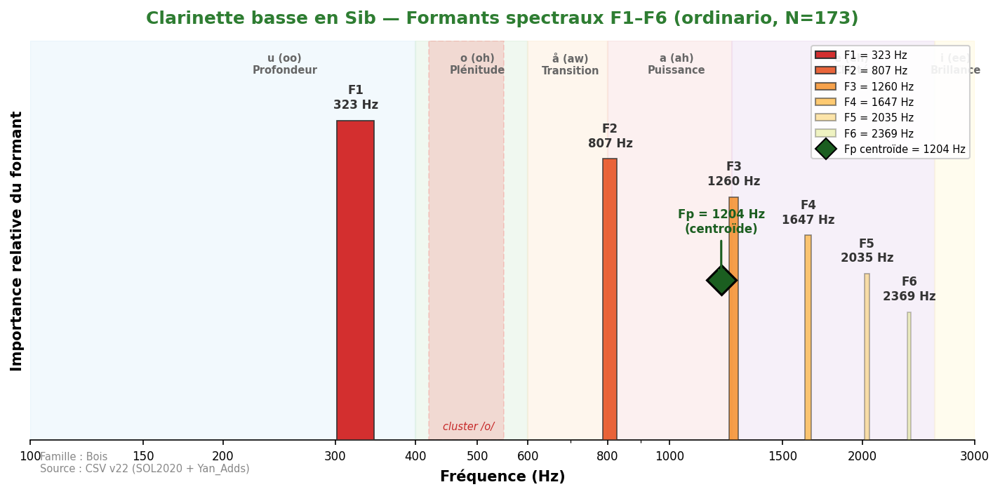
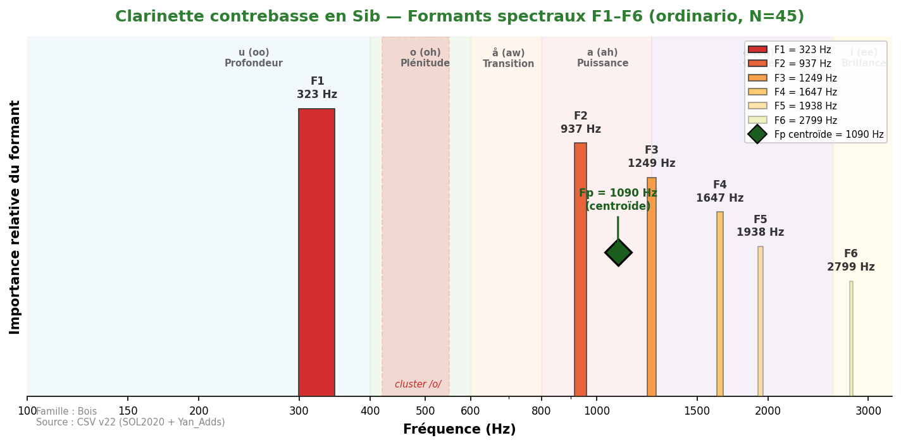

III. Les Bois
Plage formantique : 226–2 638 Hz (voyelles /u/ → /e/).
Caractéristique : grande diversité timbrale selon le type d'anche et le profil du tuyau.
Les instruments à anche double (hautbois, cor anglais, basson, contrebasson) partagent une zone formantique
commune autour de 900–1200 Hz. Les clarinettes (tuyau cylindrique, harmoniques impairs) ont un comportement
spectral très différent des flûtes (tuyau ouvert, spectre harmonique complet).
Découverte clé : le cor anglais (F1=452 Hz) et le basson (F1=495 Hz) tombent dans le
cluster de convergence 450–502 Hz, aux côtés du cor, du trombone et du violoncelle.
Flûtes
Petite flûteYan_Adds

Son extrêmement brillant et perçant. F1=1109 Hz, déjà dans la zone /a/ (puissance). Le piccolo est l'instrument le plus aigu de l'orchestre — ses formants se situent intégralement au-dessus de 1000 Hz. Fp centroïde à 876 Hz capture la zone de résonance de l'embouchure.
Fp centroïde = 876 Hz
| flatterzunge | 36 | 1 292 | 2 153 | 2 853 | 3 348 | 4 113 | 4 759 |
| ordinario | 111 | 1 109 | 1 992 | 2 638 | 3 338 | 4 177 | 4 974 |
Flûte

Son pur et aérien, riche en fondamentale. F1=743 Hz dans la zone /å/ (transition). Le Fp centroïde à 1535 Hz reflète la zone de résonance du tuyau. Grande variabilité de F2 par registre (σ=375 Hz).
Fp centroïde = 1535 Hz
| aeolian | 13 | 344 | 808 | 1 130 | 1 497 | 1 884 | 2 282 |
| aeolian_and_ordinario | 114 | 614 | 1 087 | 1 475 | 1 927 | 2 347 | 2 778 |
| aeolian_to_ordinario | 10 | 786 | 1 184 | 1 583 | 1 927 | 2 433 | 3 176 |
| chromatic_scale | 2 | 937 | 1 454 | 1 970 | 2 552 | — | — |
| crescendo | 33 | 624 | 1 120 | 1 540 | 1 970 | 2 530 | 3 348 |
| crescendo_to_decrescendo | 37 | 657 | 1 120 | 1 540 | 2 046 | 2 476 | 3 155 |
| decrescendo | 33 | 754 | 1 195 | 1 604 | 1 981 | 2 390 | 3 004 |
| discolored_fingering | 34 | 711 | 1 141 | 1 550 | 2 056 | 2 638 | 3 747 |
| flatterzunge | 116 | 571 | 1 066 | 1 518 | 1 916 | 2 315 | 2 627 |
| flatterzunge_to_ordinario | 33 | 711 | 1 109 | 1 550 | 1 938 | 2 347 | 2 767 |
| harmonic_fingering | 38 | 861 | 1 410 | 1 755 | 2 272 | 2 832 | 4 016 |
| jet_whistle | 1 | 2 035 | 2 379 | 2 584 | 2 950 | 3 273 | 3 768 |
| key_click | 15 | 398 | 786 | 1 120 | 1 421 | 1 830 | 2 186 |
| multiphonics | 32 | 431 | 872 | 1 270 | 1 604 | 1 938 | 2 476 |
| note_lasting | 37 | 624 | 1 066 | 1 561 | 2 003 | 2 509 | 3 327 |
| ordinario | 118 | 743 | 1 163 | 1 594 | 1 981 | 2 444 | 3 122 |
| ordinario_quartertones | 111 | 689 | 1 141 | 1 626 | 1 970 | 2 293 | 2 896 |
| ordinario_to_aeolian | 37 | 549 | 1 087 | 1 454 | 1 970 | 2 541 | 3 165 |
| ordinario_to_flatterzunge | 33 | 743 | 1 260 | 1 594 | 2 024 | 2 466 | 2 638 |
| pizzicato | 20 | 398 | 711 | 1 217 | 1 604 | 2 056 | 2 788 |
| play_and_sing | 21 | 377 | 786 | 1 174 | 1 518 | 1 852 | 2 261 |
| play_and_sing_unison | 17 | 409 | 797 | 1 195 | 1 561 | 1 949 | 2 369 |
| sforzato | 70 | 743 | 1 184 | 1 615 | 2 003 | 2 455 | 3 112 |
| staccato | 37 | 571 | 1 195 | 1 615 | 2 067 | 2 606 | 3 510 |
| tongue_ram | 15 | 194 | 581 | 1 217 | 1 723 | 3 068 | 5 566 |
| trill_major_second_up | 34 | 732 | 1 378 | 1 744 | 1 981 | 1 884 | 2 035 |
| trill_minor_second_up | 38 | 764 | 1 443 | 1 863 | 1 798 | 2 110 | 2 143 |
| whistle_tones | 10 | 151 | 463 | 1 034 | 1 497 | 1 938 | 2 519 |
| whistle_tones_sweeping | 26 | 861 | 1 163 | 1 572 | 1 960 | 2 401 | 2 885 |
Flûte basseYan_Adds

Son chaud et soufflé, plus riche en harmoniques que la flûte standard. F1=301 Hz dans la zone /u/ (profondeur). Timbre velouté avec une composante d'air caractéristique.
Fp centroïde = 1338 Hz
| aeolian | 13 | 280 | 603 | 915 | 1 378 | 1 873 | 3 090 |
| flatterzunge | 39 | 280 | 624 | 1 066 | 1 550 | 1 927 | 3 058 |
| ordinario | 39 | 301 | 668 | 958 | 1 400 | 1 884 | 2 713 |
Flûte contrebasseYan_Adds

Son très grave et breathy, à la limite du souffle perceptible. F1=334 Hz (zone /u/). Timbre profond et enveloppant, souvent utilisé pour ses qualités texturales.
Fp centroïde = 1092 Hz
| aeolian | 13 | 226 | 592 | 1 023 | 1 249 | 1 593 | 1 970 |
| flatterzunge | 39 | 205 | 581 | 1 023 | 1 292 | 1 798 | 2 422 |
| ordinario | 37 | 334 | 678 | 1 034 | 1 421 | 1 798 | 2 412 |
Anches doubles
Hautbois

Son nasal et pénétrant, grande projection. F1=743 Hz (zone /å/), Fp=1485 Hz. L'anche double produit un spectre riche en harmoniques pairs et impairs, avec une zone formantique caractéristique autour de 1000-1200 Hz (Meyer).
Fp centroïde = 1485 Hz
| blow_without_reed | 13 | 1 152 | 1 550 | 1 992 | 2 692 | 3 725 | 5 545 |
| chromatic_scale | 2 | 657 | 894 | 1 206 | 1 475 | 1 755 | 2 422 |
| crescendo | 33 | 786 | 1 324 | 1 863 | 2 509 | 3 359 | 4 404 |
| crescendo_to_decrescendo | 33 | 743 | 1 270 | 1 669 | 2 110 | 2 670 | 3 510 |
| decrescendo | 33 | 700 | 1 260 | 1 766 | 2 476 | 2 993 | 3 962 |
| discolored_fingering | 21 | 635 | 1 141 | 1 475 | 1 830 | 2 379 | 3 704 |
| double_trill_major_second_up | 2 | 1 130 | 1 744 | 2 110 | 2 315 | 3 187 | 4 587 |
| double_trill_minor_second_up | 14 | 678 | 1 357 | 2 024 | 2 024 | 2 530 | 3 004 |
| flatterzunge | 36 | 797 | 1 346 | 1 852 | 2 627 | 3 305 | 4 231 |
| harmonic_fingering | 13 | 883 | 1 270 | 1 561 | 2 121 | 2 993 | 3 994 |
| key_click | 9 | 732 | 1 195 | 1 776 | 2 153 | 2 552 | 3 004 |
| kiss | 10 | 678 | 1 346 | 2 003 | 2 616 | 3 208 | 4 285 |
| lip_glissando | 36 | 829 | 1 518 | 2 078 | 2 627 | 3 445 | 4 264 |
| multiphonics | 77 | 1 012 | 1 486 | 1 981 | 2 444 | 3 112 | 3 941 |
| note_lasting | 34 | 840 | 1 389 | 1 927 | 2 412 | 3 327 | 4 619 |
| ordinario | 107 | 743 | 1 260 | 1 680 | 2 304 | 2 810 | 3 725 |
| ordinario_quartertones | 102 | 764 | 1 292 | 1 755 | 2 272 | 2 853 | 3 984 |
| sforzato | 66 | 775 | 1 270 | 1 669 | 2 196 | 2 982 | 3 951 |
| staccato | 33 | 786 | 1 249 | 1 636 | 2 067 | 3 068 | 3 768 |
| trill_major_second_up | 33 | 668 | 1 227 | 1 733 | 2 218 | 2 778 | 3 122 |
| trill_minor_second_up | 34 | 754 | 1 346 | 1 884 | 2 186 | 2 530 | 3 025 |
| vibrato | 35 | 829 | 1 314 | 1 744 | 2 240 | 3 478 | 4 393 |
Cor anglaisYan_Adds

Son plus sombre et mélancolique que le hautbois. F1=452 Hz tombe dans le cluster /o/ (450-502 Hz) — ce qui explique sa fusion naturelle avec cor, basson et violoncelle. Fp=1135 Hz.
Fp centroïde = 1135 Hz
| flatterzunge | 32 | 506 | 991 | 1 400 | 2 110 | 3 704 | 4 317 |
| ordinario | 128 | 452 | 894 | 1 249 | 1 669 | 2 164 | 3 747 |
| vibrato | 96 | 420 | 840 | 1 249 | 1 669 | 2 347 | 3 747 |
Basson

Son chaud et expressif, grande flexibilité timbrale. F1=495 Hz au cœur du cluster /o/ (450-502 Hz). Le basson est le pivot timbral de l'orchestre : Δ=3 Hz avec le violoncelle, Δ=45 Hz avec le cor. Fp=1079 Hz.
Fp centroïde = 1079 Hz
| blow_without_reed | 13 | 528 | 937 | 1 227 | 1 690 | 2 013 | 3 047 |
| chromatic_scale | 2 | 571 | 990 | 1 206 | 1 884 | — | — |
| crescendo | 37 | 431 | 764 | 1 130 | 1 561 | 1 916 | 2 487 |
| crescendo_to_decrescendo | 41 | 377 | 689 | 1 141 | 1 583 | 1 927 | 2 304 |
| decrescendo | 37 | 420 | 775 | 1 152 | 1 529 | 1 873 | 2 746 |
| flatterzunge | 32 | 495 | 915 | 1 227 | 1 626 | 1 895 | 2 186 |
| glissando_with_throat | 42 | 528 | 948 | 1 217 | 1 712 | 2 078 | 4 317 |
| harmonic_fingering | 8 | 409 | 743 | 1 184 | 1 529 | 2 046 | 4 554 |
| key_click | 19 | 194 | 495 | 926 | 1 260 | 1 626 | 2 250 |
| multiphonics | 56 | 431 | 689 | 1 195 | 1 518 | 1 852 | 2 110 |
| note_lasting | 38 | 484 | 872 | 1 249 | 1 647 | 1 949 | 2 121 |
| ordinario | 126 | 495 | 915 | 1 217 | 1 658 | 2 003 | 2 950 |
| ordinario_quartertones | 119 | 441 | 851 | 1 217 | 1 658 | 2 056 | 2 692 |
| sforzato | 78 | 484 | 894 | 1 249 | 1 626 | 2 013 | 2 724 |
| staccato | 41 | 495 | 861 | 1 206 | 1 658 | 1 970 | 2 143 |
| trill_major_second_up | 37 | 495 | 883 | 1 217 | 1 572 | 1 830 | 2 078 |
| trill_minor_second_up | 39 | 517 | 937 | 1 249 | 1 583 | 2 013 | 2 110 |
| vibrato | 41 | 377 | 689 | 1 195 | 1 561 | 1 970 | 2 606 |
ContrebassonYan_Adds

Son très grave et bourdonnant, fondation des bois graves. F1=226 Hz (zone /u/), identique au tuba basse. Fp=1279 Hz. Technique analysée : non-vibrato (pas d'ordinario disponible dans la base).
Fp centroïde = 1279 Hz
⚠ Contrebasson : technique analysée = non-vibrato (pas d'ordinario dans la base).
| non-vibrato | 106 | 226 | 657 | 1 012 | 1 238 | 1 615 | 1 820 |
Clarinettes
Clarinette en MibYan_Adds

Son brillant et incisif, plus perçant que la clarinette Sib. F1=678 Hz (zone /å/). La clarinette Mib possède le spectre le plus aigu de la famille des clarinettes, avec F2=1540 Hz.
Fp centroïde = 1266 Hz
| aeolian | 19 | 883 | 1 529 | 2 003 | 2 218 | 2 584 | 2 929 |
| aeolian-flatterzunge | 19 | 355 | 1 787 | 2 272 | 2 702 | 3 359 | 3 930 |
| ordinario | 45 | 678 | 1 540 | 1 960 | 2 347 | 3 144 | 3 531 |
Clarinette en Sib

Son chaud dans le chalumeau, brillant dans le clairon. F2 extrêmement variable (σ=795 Hz) : de 549 Hz (chalumeau) à 2638 Hz (aigu). Le Fp centroïde à 1412 Hz est 4.7× plus stable que F2. Spectre dominé par les harmoniques impairs (tuyau cylindrique).
Fp centroïde = 1412 Hz
| aeolian_and_ordinario | 28 | 280 | 851 | 1 421 | 2 584 | 3 165 | 3 671 |
| crescendo | 41 | 528 | 1 238 | 1 755 | 2 326 | 3 101 | 3 801 |
| crescendo_to_decrescendo | 45 | 517 | 1 120 | 1 497 | 1 927 | 2 196 | 2 562 |
| decrescendo | 41 | 560 | 1 141 | 1 550 | 2 358 | 2 487 | 3 499 |
| flatterzunge | 126 | 495 | 1 152 | 1 658 | 2 132 | 2 907 | 3 295 |
| flatterzunge_high_register | 10 | 1 830 | 3 521 | 5 222 | 5 943 | — | — |
| glissando | 37 | 732 | 1 464 | 2 153 | 2 842 | 3 607 | 3 628 |
| key_click | 20 | 269 | 657 | 1 023 | 1 421 | 1 820 | 2 961 |
| multiphonics | 35 | 312 | 775 | 1 130 | 1 594 | 2 390 | 3 047 |
| note_lasting | 46 | 592 | 1 335 | 1 873 | 2 315 | 2 950 | 3 338 |
| ordinario | 126 | 463 | 1 130 | 1 497 | 1 852 | 2 681 | 3 273 |
| ordinario_high_register | 10 | 1 863 | 3 714 | 5 254 | 2 659 | 3 316 | 3 671 |
| ordinario_quartertones | 123 | 452 | 1 055 | 1 443 | 1 744 | 2 250 | 3 176 |
| sforzato | 86 | 560 | 1 206 | 1 830 | 2 358 | 3 112 | 3 542 |
| staccato | 45 | 528 | 1 314 | 1 766 | 2 347 | 2 788 | 3 510 |
| trill_major_second_up | 38 | 452 | 894 | 1 238 | 1 572 | 2 046 | 3 068 |
| trill_minor_second_up | 40 | 474 | 990 | 1 367 | 1 669 | 2 067 | 2 875 |
Clarinette basse en SibYan_Adds

Son profond et velouté, riche et soyeux dans le grave. F1=323 Hz (zone /u/). Le registre chalumeau possède une couleur très distinctive, utilisée pour ses qualités expressives et mystérieuses.
Fp centroïde = 1204 Hz
| aeolian | 23 | 635 | 1 410 | 1 798 | 2 164 | 2 530 | 3 704 |
| flatterzunge | 28 | 334 | 786 | 1 389 | 1 852 | 2 186 | 2 606 |
| ordinario | 173 | 323 | 807 | 1 260 | 1 647 | 2 035 | 2 369 |
Clarinette contrebasse en SibYan_Adds

Son extrêmement grave, puissant et bourdonnant. F1=323 Hz identique à la clarinette basse, mais F2=937 Hz montre une résonance plus développée dans le medium. Timbre massif et enveloppant.
Fp centroïde = 1090 Hz
| aeolian | 23 | 366 | 1 227 | 1 647 | 1 906 | 2 595 | 2 961 |
| ordinario | 45 | 323 | 937 | 1 249 | 1 647 | 1 938 | 2 799 |
Source des données : formants_all_techniques.csv — pipeline v22 validé (Δ=0 Hz pour 16/16 instruments CSV).
Méthode : peak-picking sur enveloppes spectrales (seuil -30 dB, distance min 70 Hz, 6 formants max), agrégation par médiane.
Fp : centroïde spectral pondéré en énergie dans une bande optimisée par instrument.
Instruments Yan_Adds : Piccolo, Flûte basse, Flûte contrebasse, Cor anglais, Clarinette Mib, Clarinette basse, Clarinette contrebasse, Contrebasson.